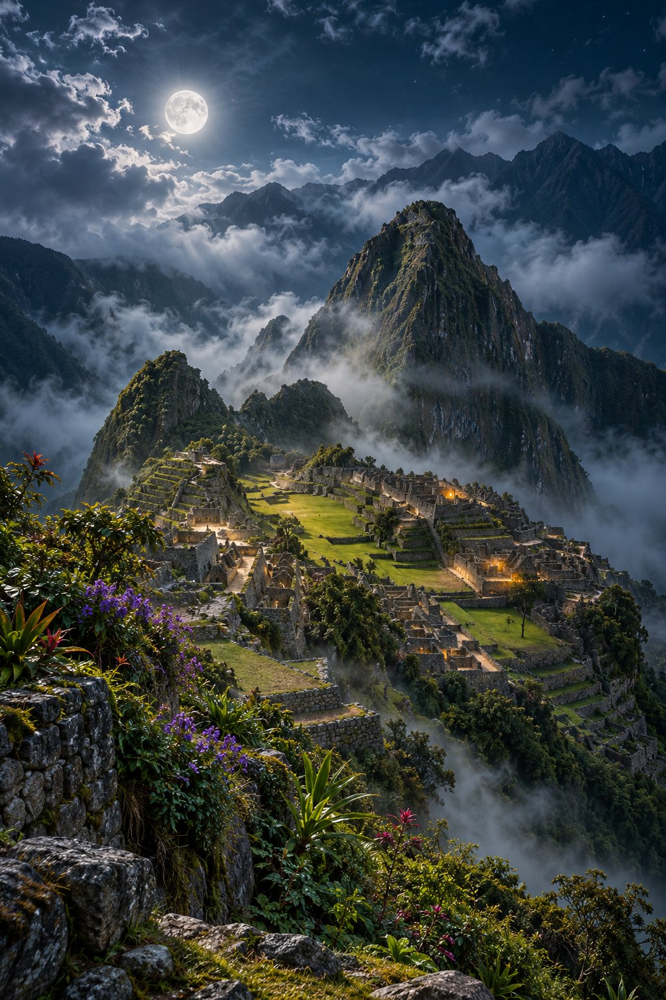

Night Windows · 24
Machu Picchu Mist
Ancient stone terraces rise through Andean mist as moonlight silvers the walls of a quiet Machu Picchu night.
Want a poster? Buy at the link. Poster and framed sizes ship via print-on-demand after checkout. Buy links stay on github.io until moonlitwindows.com DNS is live.
Browse the full Night Windows series · Night Shade Art on Instagram: @moonnightshadeart